我们在 JVM内存模型一章中，介绍了JVM中的Java堆内存区域。该区域是JVM为Java对象分配内存的主要区域，本章我们主要针对该块区域讲解JVM的垃圾回收机制。
我们先通过一个示例，回顾下对象的分配与引用：
public class Kafka {
public static void main(String[] args) {
loadReplicaFromDisk();
}
private static void loadReplicaFromDisk() {
ReplicaManager replicaManager = new ReplicaManager();
replicaManager.load();
}
}
首先，main线程会执行main()方法里面的代码，它会把main()方法的栈帧压入自己的Java虚拟机栈中：
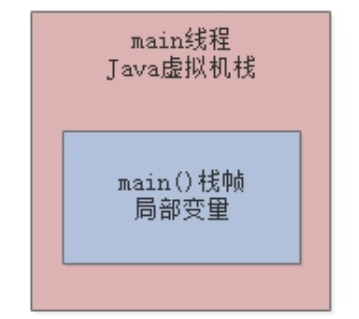
接着，main()方法内部调用了loadReplicaFromDisk()方法，就会创建一个loadReplicaFromDisk()方法对应的栈帧，同时在栈帧中存入一个局部变量replicaManager：
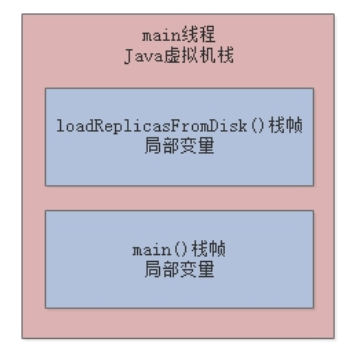
接着，loadReplicaFromDisk()方法内部创建了一个ReplicaManager对象，此时就会在Java堆内存中为该实例对象分配内存空间，并让局部变量replicaManager指向该实例对象：
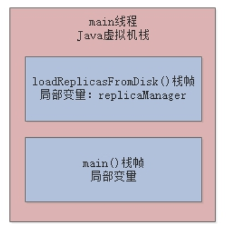
最后，执行实例对象的load()方法，完成我们的业务逻辑。那么，这里思考一个问题，load方法执行完毕后会发生什么？我们上一章中提到过，方法执行完毕后对应的栈帧就会出栈，而一旦栈帧出栈，“replicaManager”局部变量也就没有了，此时就没有任何一个变量指向Java堆内存里的ReplicaManager实例对象了：
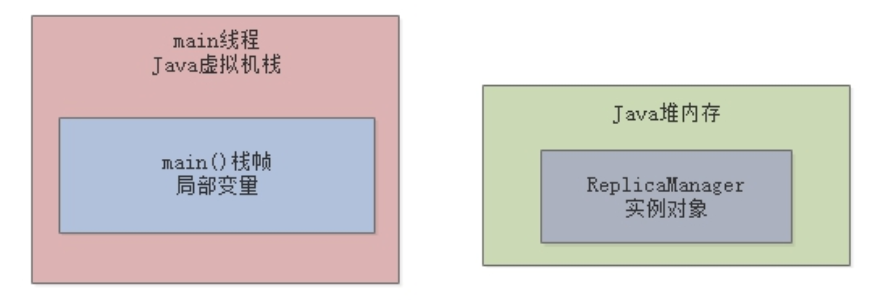
Java堆内存里面的资源是有限的，所以对于上述ReplicaManager这类孤立的对象，必须要有一种机制去清理它们，JVM会有一个在后台运行的垃圾回收线程，去分析和处理这些垃圾对象，这就是本章要讲的JVM垃圾回收机制。
在正式讲解JVM垃圾回收机制前，我们先来了解下JVM内存分代模型、：新生代、老年代、永久代。
还是通过一个代码示例来讲解：
public class Kafka {
public static void main(String[] args) throws InterruptedException {
while (true){
loadReplicaFromDisk();
Thread.sleep(1000);
}
}
private static void loadReplicaFromDisk() {
ReplicaManager replicaManager = new ReplicaManager();
replicaManager.load();
}
}
上述代码中，当main线程执行main()方法后，会进入一个永久循环，执行完第一遍后，JVM中的数据结构大致如下图：
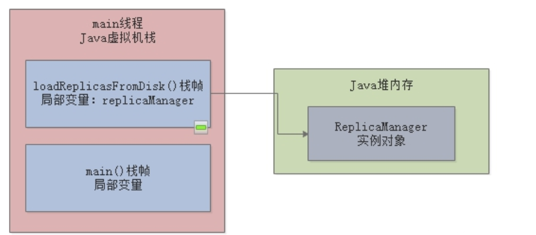
当进入下一次循环再执行loadReplicaFromDisk()时，会再构造一个ReplicaManager对象实例放入Java堆内存中，原来的那个就会被JVM垃圾回收线程给回收掉，如此循环往复，ReplicaManager对象的生命周期非常短，频繁地被创建和回收：
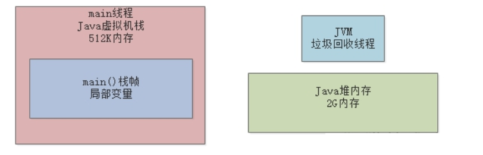
像ReplicaManager这种“朝生暮死”的小对象，通常都会在Java堆内存区域的"新生代"进行分配。但是，并不是每次JVM都会进行回收，默认情况下当新生代的内存空间快被占满时，会触发一次“Minor GC”，此时才会进行回收。
我们对2.1中的代码进行改造，此时fetcher是一个静态变量，其实例对象ReplicaFetcher会一直被该静态变量引用，而ReplicaManager对象则一直“朝生暮死”：
public class Kafka {
private static ReplicaFetcher fetcher = new ReplicaFetcher();
public static void main(String[] args) throws InterruptedException {
loadReplicaFromDisk();
while (true) {
fetcheReplicaFromRemote();
Thread.sleep(1000);
}
}
private static void loadReplicaFromDisk() {
ReplicaManager replicaManager = new ReplicaManager();
replicaManager.load();
}
private static void fetcheReplicaFromRemote() {
fetcher.fetch();
}
}
最初时，ReplicaFetcher对象和ReplicaManager对象都被分配在新生代：
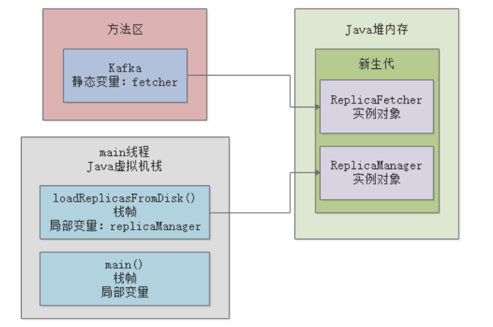
根据Java虚拟机规范，如果一个实例对象在新生代中，成功的在15次垃圾回收之后，还是没有被回收到，那么就会被转移到老年代，所以ReplicaFetcher这个对象会首先在“年轻代”驻留一会儿，但是最终会进入老年代：
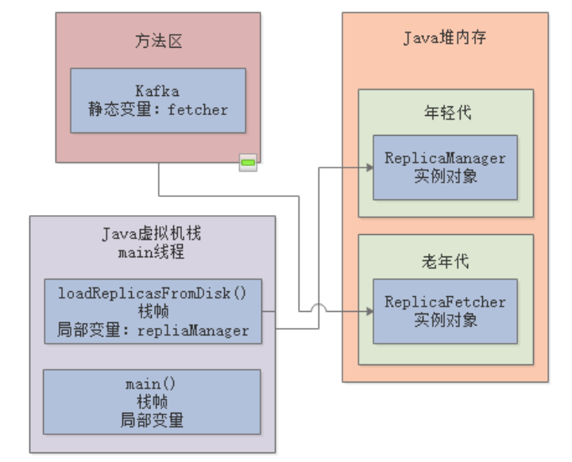
而ReplicaManager对象，当loadReplicaFromDisk()方法执行完成后，栈帧就会出栈，所以年轻代里的ReplicaManager会被垃圾回收线程清理掉：
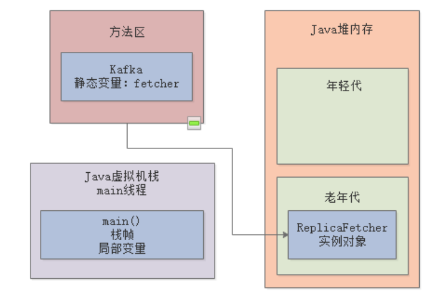
老年代也有类似"Minor GC"的机制，另外，对于一些大对象，会直接在“老年代“分配；在一次”Minor GC“之后，如果新生代中的存活对象过多，即使这些对象年龄没有达到15，也会直接进入老年代。这些细节，后面我们会专门讲解。
永久代就是我们在JVM内存模型中提到到“方法区”，方法区中存储着类的信息，当满足以下三个条件时，方法区里的类会被回收：
先来看一些核心的参数，通过这些参数可以设置上述提到的新生代、老年代、永久代的内存区域大小：
-Xms：Java堆内存区域的大小；
-Xmx：Java堆内存区域的最大大小；
-Xmn：Java堆内存区域的新生代大小，扣除新生代剩下的就是老年代的大小；
-XX:PermSize：永久代大小；
-XX:MaxPermSize：永久代的最大大小；
-Xss：每个线程的栈内存大小。
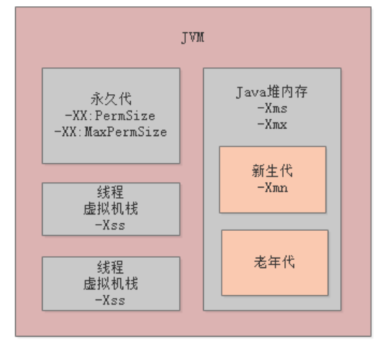
-Xms和-Xmx，分别用于设置Java堆内存的初始大小和最大大小，一般设置为相同值就可以，这样就限定了Java堆内存的总大小。
同理，-XX:PermSize和-XX:MaxPermSize配合使用可以限定永久代的大小。
最后，每个线程都有自己的虚拟机栈，-Xss就是限定了每个线程的虚拟机栈内存的大小。
JDK1.8以后，方法区变成了“元数据区”，-XX:PermSize和-XX:MaxPermSize这两个参数，也相应的变成了-XX:MetaspaceSize和-XX:MaxMetaspaceSize。
我们来看一个线上示例，更好的理解下如何合理的设置JVM参数。下图是一个电商系统的大致流程，我们重点分析用户提交支付订单-支付系统这一块：
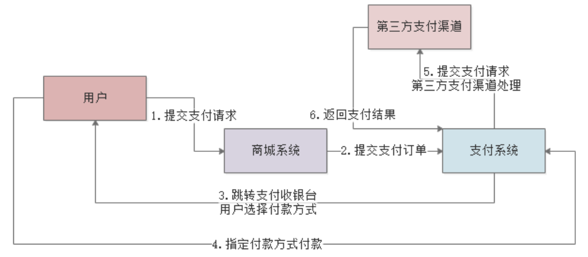
对于支付系统，其系统压力来自很多方面，包括高并发访问、大量日订单数据存储、高可用保障等等，抛开这些系统架构层面的东西，我们只看JVM层面，系统最大的压力来自于频繁的创建和销毁支付订单，所以就需要根据以下情况来估计每台机器的JVM参数设置：
首先，我们先从系统日交易量入手，估算下每秒平均交易量。以笔者曾经做过的某银行核心支付平台为例，除去双11之类促活日外，系统日平均交易量为6000万笔，根据“二八定律”，80%的交易发生在20%的时间内，再乘以经验因子3，峰值每秒交易量大约为9000笔：
$$
TPS = 60000000 80\% / (2460600.2) * 3≈ 9000
$$
假设我们部署20台机器，每台机器每秒大概处理450笔订单：
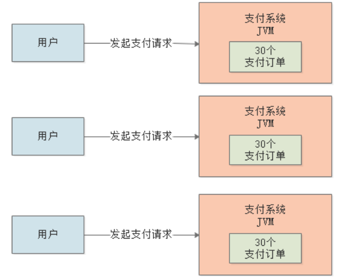
我们再来估算下一次支付请求处理的耗时，包括订单创建、缓存查询、填充数据、入库等等操作，这里咱们估算的大一点，假设需要1s时间。此时，我们脑子里应该有个流动的模型：
每台机器1秒钟接收到450笔支付订单，然后再JVM新生代创建了450个订单对象，接着1秒钟后，这450笔订单处理完毕，其引用就被回收了，那这些对象在JVM的新生代里就是没人引用的垃圾对象了。
我们再来估算下每笔订单所需的内存空间，一般直接根据订单实体Bean中的字段和类型来估算就可以了，比如Integer类型占4字节、Long占8字节等等。根据经验，一个订单对象20个字段差不多了，所以算1个订单对象总共500字节，那450笔订单总共算250kb好了。
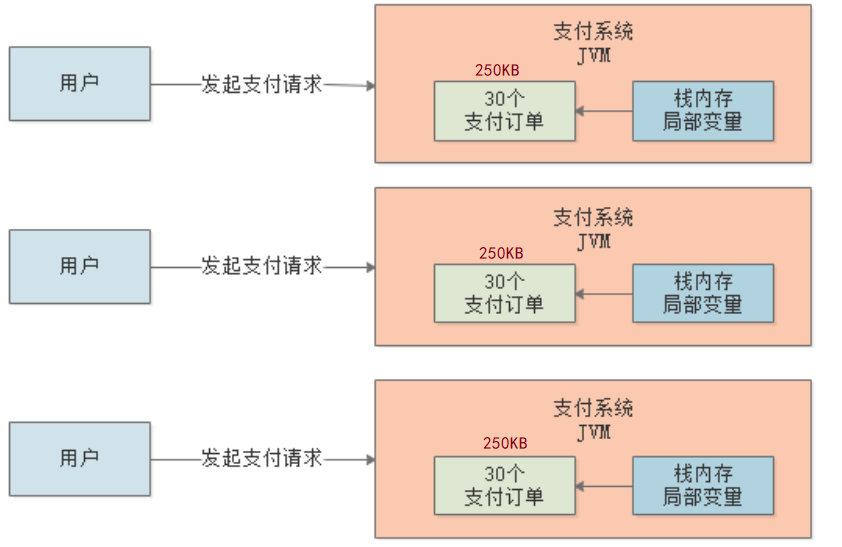
现在我们已经把整个系统运行的关键环节的数据都分析清楚了，当系统运行时，新生代中积累的无引用对象会越来越多，直到某一刻可能达到了几百兆，把新生代空间都快占满了，然后就会触发“Minor GC”，把新生代里的垃圾对象都回收掉。
真实的线上支付系统，肯定每秒钟还会创建其它各种各样的对象，比如商户数据、信贷数据等等，我们一般把订单模型扩充10倍，来作为整体对象所占的内存大小，250kb*10大概也就3MB，也就是说：
每秒钟创建出来的被Java虚拟机栈的局部变量引用的对象，大致占据的内存空间为3MB左右
结合上述分析，其实我们就可以知道JVM的参数该如何设置了。
一般来说，像支付这种核心业务系统，给的机器配置都是比较好的，笔者之前所在公司的支付系统机器配置最低为8核16G，除去机器本身的内存消耗外，给JVM进程12G的内存：
-Xms和-Xmx设置为10G，即整个Java堆内存一共10G；-Xmn设置为8G，即给新生代分配8G。以每秒创建3MB新生代对象算，新生代占满大约需要45分钟，也就是45分钟左右触发一次“Monir GC”，是可以接受的。
假设业务量更大，从纵向考虑，可以用更高配的机器；从横向考虑，可以横向扩展部署更多应用；从系统架构考虑，可以引入MQ削峰、分库分表或限流，总之只要每台机器处理的请求更少，对JVM的压力就越低。
本章我们介绍了JVM的分代垃圾回收机制，并通过一个线上示例讲解了如何对JVM的各个核心参数进行预估配置。关于新生代、老年代、永久代还有许多细节我们没有在本章讲解，后续章节，我们会逐步深入。